Polars Chart
Races Drawer
Top Bar
The top bar gives direct access to the Polars chart, the Polar Generator, this Help and the contact form.
The round button at its right switches between the day and the night themes [☾/☀]. Your choice is remembered on this device. Without a choice, the theme follows the setting of your system.
The screenshots of this Help follow the same theme.
Races Drawer
On a desktop screen, the chart, its options and its results fit on one screen. The race list and the race information are kept in a drawer, which slides in from the left.
To open the drawer, click the burger button [☰] at the left of the top bar, or click the current race summary, which shows the race name and the boat type:
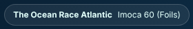
Click the [✕] button, the dimmed area beside the drawer, or press [Esc] to close it. Picking a race also closes the drawer.
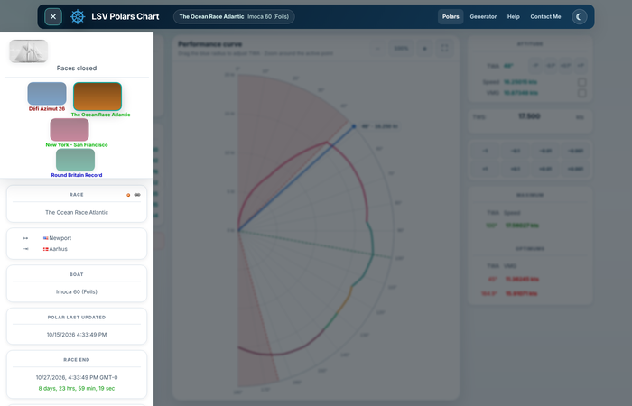
On a tablet, the race list is displayed above the chart and the race information below it. On a phone, the race thumbnails are replaced by a simple drop-down list.
Races List
The top of the drawer holds a series of thumbnails, each representing a race in the Virtual Regatta™ Offshore game.
4 types of races can be found there, identified by their color:
- Incoming
- In progress
- About to end (within 2 days)
- Closed (only in the Races archived)
In the drawer, the Countdown panel also indicates the race state with the corresponding color.
In addition, a timestamp and a countdown are displayed when applicable:
- For a race incoming, the countdown indicates the time remaining before race start,
- For a race in progress, the countdown indicates the time remaining before race end.
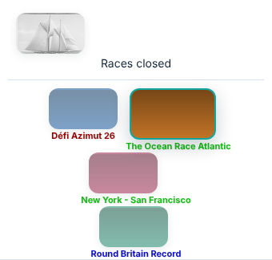
Race Selected
Visually, the race selected will appear slightly bigger and slightly brighter, so you can spot at first glance which
race you are positionned on.
On the example below, the race selected is The Ocean Race Atlantic:
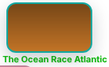
Beside this visual information, the name of the race selected is repeated in the Race panel of the drawer, and in the race summary of the top bar.
If, as it may happen, no race seems to be selected on the banner, then it's most likely because the race is closed
or archived.
Read the Races archived section for more details.
When a race is selected, the entire application interface is updated to reflect this change.
Some data comes from the race setup gathered from the server during the switch, some numbers are calculated on the fly, and some data is retrieved from the Browser's local database, like the latest TWA/TWS known, the options and sails subscribed on your boat.
Races Archived
At the top of the drawer, the dimmed sail thumbnail named Races closed opens the archive.
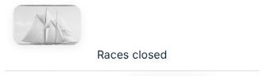
Two types of races can be found there:
- Races Closed
- Races Archived
A race is closed when its end date is reached. This date is fixed by Virtual Regatta™.
A race is archived when its end date is not yet reached, but when the user does not want to see it anymore in the races list. There could be many reasons to such a choice, some of which:
- The player is not enrolled in the race
- The player finished the race
- The player just want to hide the race temporarily
To move a race to the archive, there is an "Archive this race" [] button beside the race name in the Race panel.
This button is available only for races in progress (or about to end, but not on races incoming nor on races closed).
A race archived can be restored, as long as its end date is not closed by VR in the meantime.
In this case, the archive button is replaced by a "Restore this race" []
button beside the race name in the Race panel.
Race Information
Below the races list, the drawer shows the information about the selected race, in the panels described below.
Race
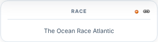
This panel contains the full name of the selected race.
It also contains contextual action buttons:
Archive this race
Moves the race into the Races archived.
Available only for races in progress.
Restore this race
Moves the race into main list.
Available only for races still in progress which were previously archived.
 Get Permalink
Get Permalink
Transforms the Page URL in the address bar to reveal permalink.
Route
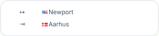
This panel shows the starting and ending points of the race.
The GPS coordinates are gathered from the race setup sent by Virtual Regatta™.
Also, no intermediate gates/buoys are displayed here.
This is why, on races where starting and ending in the same place, the display may be dull.
Boat Type
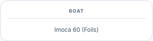
This panel shows the type of the boat used in this race.
Each boat have specific performances profiles.
This includes intrinsic polars charts, sails and options sets, which may vary from one boat to another.
Providing the boat type here is only informative, but useful for those willing to use an
external router, and use proper polar data.
In this regard, you might want to use the dedicated Polar Generator application.
Polar Last Updated
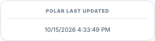
This panel shows when the polar data of the boat was last updated on the server.
If the speeds displayed look different from the game, check this date first: the game may have changed the boat polars since then.
Countdown
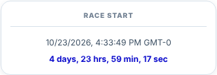
This panel shows the time remaining to the incoming event on the race selected.
When a race is not yet started, the start time is displayed and the countdown updates every second until the start time is reached.
Incoming races are colored in "blue", according to the color code used in the races list.
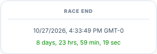
When a race is in progress, the countdown shows the end time, and counts down the time remaining until the race closes.
Races in progress are colored in "green" (in progress) or "dark red" (about to close within 2 days).
A closed race has no countdown anymore, which is replaced by the message "No information to display right now".
Partners
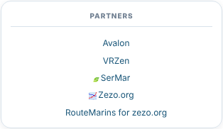
This panel provides direct links to partner applications: Avalon, VRZen, SerMar, Zezo.org and the RouteMarins extension for Zezo.org.
Version
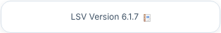
This panel shows the running LSV version and links to the release notes.